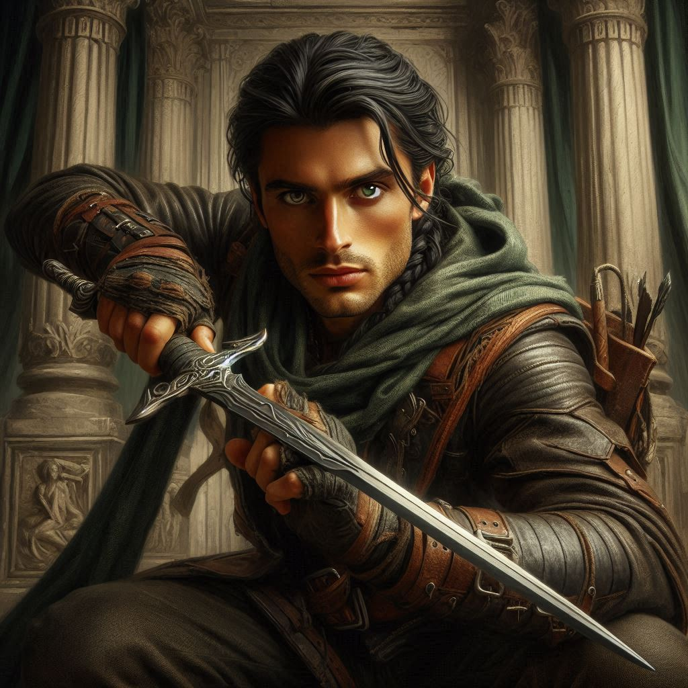
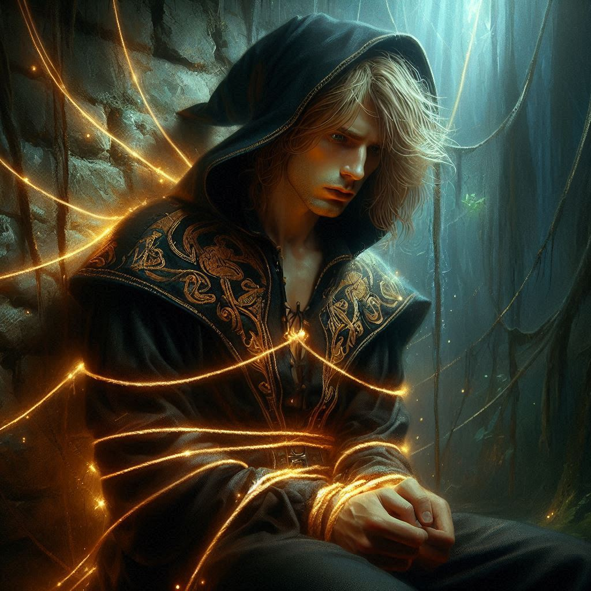

The Tragedy of Honor
You tighten your grip on your short bow, your heart pounding like a war drum as you step cautiously through the high tunnel opening. Below, in the massive cavern, a sinister glow pulses from the swirling portal Varis has opened. The air is thick with the scent of burning incense and something fouler—sulfur, rot, and the acrid tang of dark magic. Elias moves beside you, his bow drawn, his gray eyes scanning for threats.
Jorsh is beside you, the white knuckles of his clenched fists betraying his otherwise calm demeanor. “What’s it going to be, Kira?”
Elias tenses beside you. "Don’t listen to him," he mutters. "He’s been lying from the start."
Jorsh scowls, his fingers curling into fists again and again. "Lying? I’m the only one trying to stop Varis! The only one willing to do what’s necessary!"
The stale air in the room hisses with tension, with magic. You weigh your options. The young man before you was once your love, your closest companion. And yet, standing here, Elias at your side, the truth is clear. Jorsh has been manipulating you, drawing you toward his path with half-truths and old wounds. You steel yourself.
"Jorsh the Betrayer," you declare, leveling an arrow, "you are under arrest for treason against the Kingdom of Yew. Stand down now."
His face twists in rage. "Treason? Have you learned nothing? I fight for justice! I fight for everything they took from us! And you—" he falters, hurt flashing in his eyes. "You’re siding with them?"
"I’m siding with the people who won’t let this kingdom fall into darkness," you say.
The battle begins.
Jorsh raises a hand, and black tendrils lash toward you. You dodge, rolling to the side as Elias looses an arrow. Jorsh deflects it midair with a flick of his wrist. You charge, your blade cutting through the dark haze. Jorsh parries with a conjured dagger, his movements fluid and precise. Magic surges between you as the clash of steel fills the cavern. Elias moves like a shadow, his sword slashing toward Jorsh’s flank. Jorsh blocks again, but he's outnumbered.
A well-timed feint lets you drive your pommel into Jorsh’s ribs. He staggers back, gasping. For a heartbeat, you see the boy you once loved—afraid, desperate. But then his expression hardens, and he raises both hands. A dark wave of force explodes outward, sending you and Elias flying.
You hit the cavern wall hard, your vision swimming. Elias groans beside you but forces himself up, gritting his teeth. You rise together, ready to press the attack.
But then the shadows shift.
Varis has noticed you. The dark elf lowers his arms, his spellwork complete. The portal behind him swirls with chaotic power. He turns, eyes glowing violet, and sneers.
"Enough of this."
A pulse of darkness washes over you, freezing you in place. You struggle, your muscles locked, your lungs constricting as if held by invisible chains. Elias is frozen beside you, his expression locked in helpless fury.
Jorsh stumbles forward, weakened, drained. Varis extends a hand, tendrils of magic coiling around the sorcerer like living ropes.
"No!" Jorsh gasps, fighting back. "You can’t—"
"Oh, but I can," Varis purrs. "Your magic is strong, my dear Jorsh, but it lacks purpose. Under my command, you will have purpose. You will help me bend Yaldaboath to my will."
Jorsh struggles, but the dark magic tightens around him. His gaze locks onto yours, and for the first time, there is fear in his eyes.
"Kira—!"
You strain against the magic holding you, desperate to move, to fight, to do anything. But you are helpless, forced to watch as Varis drags Jorsh toward the portal. The swirling darkness swallows them whole, and then—they are gone.
The chamber falls silent, save for the flickering echoes of magic dissipating into the stone walls. Your breath is shallow, your heart hammering. Then, the spell breaks. You collapse to your knees, gasping. Elias lands beside you, panting, his hand gripping his sword hilt with white-knuckled fury.
Jorsh is gone. Taken.
And you failed to stop it.
The tragedy settles over you like a weight too heavy to bear. Your mission was to bring Jorsh to justice. Instead, you have delivered him into the hands of the enemy.
The shadows linger around the portal’s edges, whispering like unseen ghosts. You have lost. And the war has only just begun.